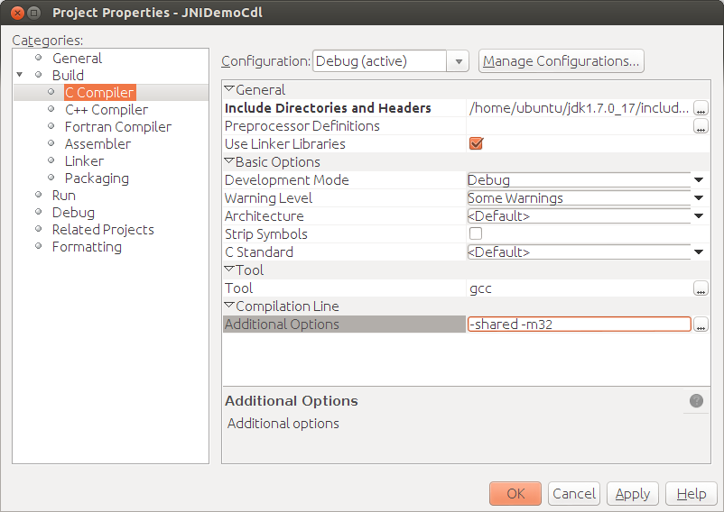

Apache NetBeans
Apache NetBeansLatest release
Начало работы с JNI с IDE NetBeans и подключаемым модулем C/C++ Plugin в Linux
| This tutorial needs a review. You can edit it in GitHub following these contribution guidelines. |
Март 2014 г. [Номер версии: V8.0-1]
В этой учебной программе рассматривается создание простого приложения, использующего код JavaTM Native Interface (JNI), написанный на языке программирования C.
Этот учебный курс создан для Linux.
Требования
Для работы с этим учебным курсом требуется следующее программное обеспечение и ресурсы.
| Программное обеспечение или материал | Требуемая версия |
|---|---|
IDE NetBeans |
|
Комплект для разработчика на языке Java (JDK) |
|
Компиляторы C и C++, |
Дополнительные сведения о загрузке и установки необходимого программного обеспечения см. в разделах Инструкции по установки IDE NetBeans 8.0 и + Настройка IDE NetBeans дляC/C+/Fortran.
Настройка среды для учебного курса
Для этого учебного курса потребуются модули Java и C/C. Если комплект C/C IDE NetBeans уже загружен, пользователи могут загрузить дополнительные модули Java по отдельности.
Чтобы определить наличие модулей Java и C/C, выберите пункт меню "Файл > Новый проект". В категории проектов должны входить Java и C/C.
Чтобы загрузить отсутствующие модули Java и C/C++, выполните следующие действия.
-
В IDE NetBeans выберите 'Сервис' > 'Подключаемые модули'.
-
Во вкладке "Доступные подключаемые модули" установите флажок для Java или C/C++ в зависимости от того, какой модуль отсутствует в среде IDE. Если оба модуля уже установлены, они отобразятся во вкладке "Установлено".
-
Нажмите кнопку "Установить".
-
Щелкните 'Далее' в диалоговом окне установщика IDE NetBeans, установите флажок принятия условий лицензии установщика и щелкните 'Установить'.
-
По завершении установки нажмите кнопку "Готово".
Настройка проекта приложения Java
Для данной программы требуются проект Java и проект C. В этом разделе описаны создание и настройка проекта Java для разрабатываемого приложения JNI. Для этого потребуется создать проект приложения Java, инициализировать его главный класс и добавить метод в машинном коде к этому классу.
-
Выберите команду "Файл" > "Новый проект". Выберите категорию "Java" и тип проекта "Приложение Java". Нажмите 'Далее'.

-
В поле "Имя проекта" введите
JNIDemoJava.
-
В качестве местоположения проекта можно указать любой каталог на компьютере. В этом примере используется папка по умолчанию "NetBeansProjects" в каталоге пользователя.
-
Не снимая флажок 'Создать основной класс', измените имя основного класса на
jnidemojava.Main.

-
Нажмите 'Готово'.
В среде IDE будет создана папка проекта NetBeansProjects/JNIDemoJava .
Изменение исходного кода главного класса
-
Чтобы открыть источник класса Main в редакторе, щелкните правой кнопкой мыши узел класса
Main.javaи выберите 'Открыть'. -
Замените строку
//TODO code application logic hereв методеmainследующим кодом:
new Main().nativePrint();-
В поле слева появится индикатор в виде лампочки, сообщающий об ошибке. Щелкните индикатор. Отобразится ярлык для создания метода
nativePrint.
-
Щелкните этот ярлык, после чего будет вставлен следующий код:
private void nativePrint() {
throw new UnsupportedOperationException("Not supported yet");
}-
Удалите строку
throw new UnsupportedOperationException("Not supported yet");-
Измените метод
nativePrint(): вставьте ключевое словоnativeв подпись метода, чтобы она выглядела следующим образом:
private native void nativePrint();Ключевое слово native означает, что реализация этого метода размещена во внешней библиотеке в машинном коде. Однако при запуске местоположение библиотеки не ясно.
Новый метод main будет выглядеть следующим образом:
public static void main(String[] args) {
new Main().nativePrint();
}
private native void nativePrint();
}-
Правой кнопкой мыши щелкните имя проекта и выберите пункт "Очистить и собрать". После этого проект должен успешно собраться.
Создание файла заголовка библиотеки в машинном коде
В этом разделе будет использоваться javah – средство Java, используемое для создания заголовка на языке C из класса Java.
-
В окне терминала перейдите к каталогу
NetBeansProjects. -
Введите следующее значение:
javah -o JNIDemoJava.h -classpath JNIDemoJava/build/classes jnidemojava.MainВ каталоге NetBeansProjects будет создан файл заголовка на языке C JNIDemoJava.h . Этот файл требуется для того, чтобы обеспечить предоставление правильного объявления функции для реализации метода nativePrint() в машинном коде. Он понадобится позже при создании части приложения на языке C.
-
Переключение обратно в окно IDE NetBeans.
Заключение
В этом упражнении вы создали новый проект приложения Java, указали его местоположение и определили пакет и имя главного класса этого проекта. Вы также добавили новый метод к главному классу и пометили его как метод с реализацией в машинном коде. В завершение вы создали файл заголовка на языке C, который понадобится позже при компиляции библиотеки в машинный код.
Настройка нового проекта динамической библиотеки на языке C/C++
В этом разделе рассматривается процесс создания части приложения в машинном коде. Вы создадите проект динамической библиотеки на языке C++ и настроите его для сборки кода JNI.
После настройки проекта вы создадите реализацию для метода в машинном коде, который был объявлен ранее в части приложения на языке Java.
-
Выберите команду "Файл" > "Новый проект". В окне "Категории" выберите C/C. В окне "Проекты" выберите "Динамическая библиотека C/C". Нажмите кнопку "Далее".

-
В поле "Имя проекта" введите
JNIDemoCdl.
-
В поле "Местоположение проекта" укажите то же местоположение, которое было использовано для проекта приложения Java –
NetBeansProjects. Это местоположение должно отобразиться по умолчанию.
-
Оставьте данные во всех остальных полях без изменения и нажмите 'Готово'.
В среде IDE будет создана папка проекта NetBeansProjects/JNIDemoCdl .
Настройка свойств проекта
-
Правой кнопкой мыши щелкните узел проекта "JNIDemoCdl" и выберите "Свойства".
-
В диалоговом окне свойств выберите узел "Компилятор C" в свойствах "Сборка" узла.
-
Нажмите кнопку 'Включить каталоги и заголовки…'. В открывшемся диалоговом окне 'Включение каталогов и заголовков' нажмите 'Добавить'.
-
Перейдите к каталогу JDK и выберите подкаталог
include. -
Выберите параметр 'Сохранить путь как абсолютный', затем нажмите кнопку 'Выбрать', чтобы добавить этот каталог во включенные каталоги проекта.
-
Аналогичным образом добавьте каталог JDK
include/linux, затем нажмите кнопку "ОК".

Эти параметры требуются для включения ссылок на библиотеку Java jni.h из кода C.
-
Найдите область 'Строка компиляции' в параметрах компилятора C. Щелкните текстовое поле в свойстве 'Дополнительные параметры' и введите
-shared -m32. 
Параметр -shared указывает создание динамической библиотеки.
Параметр -m32 указывает создание двоичного файла для 32-разрядных платформ. По умолчанию в 64-разрядных системах компилируются двоичные файлы для 64-разрядных платформ, что приводит к возникновению множества проблем в 32-разрядных JDK.
-
Перейдите в категорию "Компоновщик" на левой панели.
-
Поставьте курсор в текстовое поле "Вывод" и замените строку
${CND_DISTDIR}/${CND_CONF}/${CND_PLATFORM}/libJNIDemoCdl.soна строку
dist/libJNIDemoCdl.soчтобы упростить путь к созданному файлу совместно используемого объекта. Это поможет упростить процесс создания ссылки из Java.

-
Нажмите кнопку "ОК". Определенные параметры сохранены.
Добавление файла заголовка
-
Перейдите в окно терминала и переместите ранее созданный файл заголовка
JNIDemoJava.hиз каталогаNetBeansProjectsв каталог проекта библиотеки C/C++ –NetBeansProjects/JNIDemoCdl. 2. В окне 'Проекты' щелкните правой кнопкой мыши узел 'Файлы заголовка' проектаJNIDemoCdlи выберите 'Добавить существующий элемент'. Перейдите в каталогNetBeansProjects/JNIDemoCdl, выберите файлJNIDemoJava.hи нажмите 'Выбрать'.
Файл JNIDemoJava.h появится в списке 'Файлы заголовка'.

Реализация метода
-
Правой кнопкой мыши щелкните узел "Исходные файлы" проекта
JNIDemoCdl, затем выберите пункт "Создать > Исходный файл C". ВведитеJNIDemoв поле "Имя файла", затем нажмите кнопку "Готово". В редакторе откроется файлJNIDemo.c. -
Измените файл
JNIDemo.c, введя следующий код:
#include <jni.h>
#include <stdio.h>
#include "JNIDemoJava.h"
JNIEXPORT void JNICALL Java_jnidemojava_Main_nativePrint
(JNIEnv *env, jobject obj)
{
printf("\nHello World from C\n");
}-
Сохраните файл
JNIDemo.c.
-
Щелкните правой кнопкой мыши узел проекта
JNIDemoCdlи выберите 'Собрать'. В окне 'Результаты' отображается следующее (или аналогичное) сообщение:СБОРКА УСПЕШНО ЗАВЕРШЕНА (общее время: 171 мс).
Заключение
В этом упражнении вы создали новую динамическую библиотеку C/C++, указали ее местоположение и настроили ее для сборки реализации JNI метода Java. Вы добавили созданный файл заголовка для метода в машинном коде, объявленного в приложении Java, и выполнили его реализацию.
Сборка и запуск приложения
В этом упражнении вы выполните ряд окончательных изменений в части приложения на языке Java. Эти изменения нужны, чтобы часть приложения на языке Java правильно выполнила загрузку библиотеки в машинном коде, скомпилированной в предыдущем упражнении. После этого вы выполните компиляцию созданного приложения и запустите его.
Настройка проекта Java
-
Откройте файл
Main.javaв редакторе. -
Добавьте код инициализации для динамической библиотеки C++ после строки
public class Main, используя путь к выходному файлу, укороченный в предыдущем упражнении:
static {
System.load("_full-path-to-NetBeansProjects-dir_/JNIDemoCdl/dist/libJNIDemoCdl.so");
}Замените full-path-to-NetBeansProjects-dir путем к каталогу NetBeansProjects, который должен иметь следующий (или аналогичный) вид: /home/username/NetBeansProjects
-
Сохраните файл
Main.java.
Запуск приложения JNIDemoJava
-
Выберите приложение JNIDemoJava в окне 'Проекты'.
-
Чтобы запустить приложение, нажмите клавишу F6 или кнопку "Выполнить" на панели инструментов. Программа должна запуститься корректно, и в окне 'Результаты' должны отобразиться следующие (или аналогичные) данные:

Заключение
В этом упражнении вы выполнили окончательную настройку и запустили приложение, чтобы проверить, что реализация метода в машинном коде берется из библиотеки C, скомпилированной в машинный код.
Что дальше?
Чтобы проверить проект на рабочем примере, + загрузите файл ZIP, содержащий исходный код,+ с веб-сайта netbeans.org.
Для получения дополнительной информации используйте следующие документы:
-
Интерфейс Java с машинным кодом (Java Native Interface) link:https://netbeans.org/about/contact_form.html?to=7&subject=Feedback:%20Beginning%20JNI%20with%20NetBeans%20IDE%20and%20C/C+%20Plugin%20on%20Linux[+Отправить отзыв по этому учебному курсу]